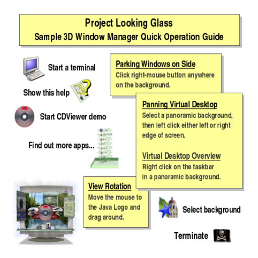

Every application opens as a window floating in the 3D room. A window has a title bar across the top carrying its name and the standard minimize, maximize and close buttons, and a content area below it.

Window gestures are performed on the title bar (or the window's pickable border), so that clicks inside the content still reach the application:
| Gesture | Action |
|---|---|
| Left-drag the title bar | Move the window. |
| Middle-drag, or CTRL + left-drag | Rotate (spin) the window in 3D. |
| Right-click | Flip the window over to its "sticky note" back. |
Right-clicking the empty desktop background swings your open windows aside onto a "bookshelf", revealing the background; clicking a parked window (or right-clicking the background again) brings it back. When a window is parked its spine title turns to face you, like a book on a shelf.